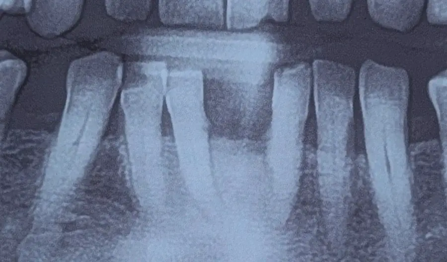

نسخه استخراجشده؛ ترجمه یا تأیید علمی انجام نشده است. وضعیت: captured
بیمار برای مشاورهی تخصصی پروتز ارجاع شده است. در پانورامیک، بین دو سانترال پایین (دندانهای ۱) دیاستم و فاصلهی بسیار زیادی دیده میشود. جراح ارجاعدهنده سانترالها را بهخاطر پیشآگهی ضعیف غیرقابل نگهداری (Hopeless) و کشیدنی تشخیص داده است؛ اما چون ایمپلنت در این ناحیه به پیوندهای سنگین و پیچیدهی استخوان نیاز دارد، ترجیح میدهد قدام با بریج متکی بر لترالها (دندانهای ۲) بازسازی شود و ارزیابی پروتزی آن را خواسته است.

معاینهی دقیق کلینیکی و تطبیق آن با یافتههای رادیوگرافیک نشان داد فاصلهی بین دو سانترال دستکم به اندازهی عرض دو دندان کامل است. پس اگر سانترالها کشیده شوند و لترالها پایه (Abutment) شوند، بریج حاصل ۴ پونتیک (Pontic) در قدام خواهد داشت.
دندانهای لترال این بیمار سطح مقطع ریشه و ساپورت استخوانی لبمرزی (Borderline) داشتند.
پرسش ارزیابی پروتزی این است: آیا دو پایهی لبمرزی بار چنین اسپنی را تحمل میکنند، یا طرح آسانتر فقط چالش جراحی را به بیومکانیک پایهها منتقل میکند؟
بریج متکی بر لترالها بهخاطر رعایتنشدن توازن بیومکانیکی رد شد. به جراح توضیح داده شد و به بیمار هم مشاوره داده شد که حتی اگر مسیر درمان به کشیدن لترالها و عریضتر شدن ناحیه برای کاشت ایمپلنت برسد، بسیار منطقیتر و استانداردتر از تراش بیمورد کانینهای سالم و ساخت یک بریج بلند با پیشآگهی مبهم است.
این تصمیم مطلق نیست و به کیس بستگی دارد. اگر لترالها پریودنشیوم سالم و پیشآگهی خوب داشته باشند، حذف دندان سالم فقط برای سادهسازی طرح با اصول حداقل مداخله در تضاد است. اما وقتی ساپورتشان لبمرزی است، نگهداشتن دندانی که ساپورت اضافه نمیکند ولی طرح را محدود میکند توجیهی ندارد.
هرگز برای فرار از چالشهای جراحی، مثل پیوند استخوان، بار نامعقول بیومکانیکی را به پایههای دندانی ضعیف منتقل نکن؛ این کار پیشآگهی ضعیف جراحی را با ریسک بالای شکست پروتز معاوضه میکند. میانبرهای درمانی در قدام معمولاً به شکستهای فاجعهبارتر میرسند.